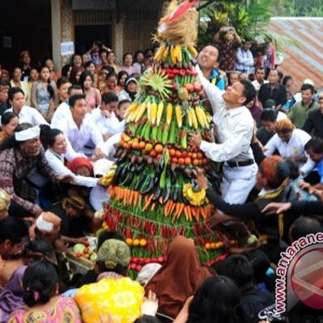

Pemerintah Kabupaten
MOJOKERTO
Pemerintah Kabupaten
MOJOKERTO
Tentang Mojokerto

Kota Mojokerto adalah sebuah kota di Provinsi
Jawa Timur, Indonesia.
Kota ini terletak 50 km
barat daya Surabaya. Mojokerto merupakan kota
penyangga utama Ibu kota Provinsi Jawa timur.
Kota ini mengalami
perkembangan yang sangat
pesat. Mojokerto terdiri atas 18 kecamatan,
yang
kemudian terbagi atas beberapa desa dan kelurahan.
Pada
awalnya pusat pemerintahannya berada tepat di
Kota Mojokerto. Namun sekarang sudah banyak gedung
dan kantor pemerintahan yang
dipindahkan ke Kecamatan
Mojosari, yang merupakan wilayah Mojokerto sebelah
timur, tepatnya pada tanggal 20 Juni 1918. Dahulu
Kabupaten Jombang pun merupakan bagian dari wilayah
Kabupaten Mojokerto
sebelum diberi kemandirian
sebagai sebuah kabupaten sendiri pada tahun 1910.
Kuliner Mojokerto

ONDE-ONDE
Onde-onde adalah makanan
khas Mojokerto yang terbuat
dari campuran tepung ketan
yang dibentuk bola-bola kecil.
Di dalamnya terdapat isian
kacang hijau yang dilembutkan.
onde onde biasanya ditaburi
dengan biji wijen untuk
mempercantik tampilannya.
SAMBEL WADER
Cara pembuatan sambel wader
yaitu Ikan wader terlebih
dahulu dibersihkan dari sisik
dan kotorannya. Setelah ikan
bersih, ikan tersebut langsung
digabungkan dengan bahan
pembuat sambel lainnya,
seperti bawang merah dan cabai
merah. Ikan wader siap digoreng
hingga matang dan siap untuk
disajikan.

SATE BANGIL
Perbedannya yang terdapat pada
Sate Bangil ini dengan sate
kambing yang lainnya adalah
kita bisa menentukan sendiri
sate dari bagian kambing apa
yang kita inginkan sesuai selera.
Semua tergantung dengan permintaan
para pembelinya.
Wisata Mojokerto
Patung Budha Tidur
Patung Buddha Tidur atau yang lebih
dikenal dengan istilah sleeping
Buddha menjadi salah satu obyek
wisata di Mojokerto yang banyak
dikunjungi anak-anak sekolah maupun
kalangan umum.Patung Buddha Tidur
berwarna keemasan yang memiliki
panjang 22 meter dengan lebar 6
meter dan tinggi 4,5 meter.Patung
yang dibuat pada tahun 1993 ini
adalah yang terbesar ketiga didunia
setelah Thailand dan Nepal.
Gunung Penanggungan
Gunung Penanggungan merupakan
salah satu obyek wisata alam
yang perlu anda kunjungi.
Memang tingginya tidak seberapa,
namun treknya sungguh luar
biasa. Seperti halnya mirip
dengan replika Gunung Semeru.
Gunung Penanggungan terletak
didua kabupaten, yaitu di
Kabupaten Mojokerto, dan
Kabupaten Pasuruan Jawa Timur.
Gunung ini dulunya adalah Gunung
Berapi, namun saat ini sudah
tidak aktif kembali, oleh karena
itu Gunung Penanggungan dinamakan
sebagai gunung api yang sedang tidur.
Memiliki ketinggian 1653 mdpl
dengan lingkup dataran yang lumayan
terjal bagi gunung yang terbilang
rendah ini.
Air Terjun Coban Canggu
Coban Canggu adalah salah satu dari
banyak air terjun di kecamatan Pacet,
kabupaten Mojokerto. Namun,
kebanyakan air terjun di Pacet ini
hanya mengalir di kala-kala tertentu
saja alias musiman. Nah, air terjun
coban Canggu ini lah salah satu air
terjun yang masih mengalir di kecamatan
Wates walaupun di musim kemarau
sekalipun.
Budaya Mojokerto
Grebeg Suro Mojopahit
Grebeg Suro Majapahit adalah tradisi tahunan yang dilaksanakan setiap tanggal 1 Suro kalender Saka. Tradisi ini di pelopori oleh Yayasan Among Tani. Rangkaian kegiatannya antara lain : Ziarah ke makam leluhur dan pahlawan, pentas kesenian dan makanan rakyat, grebeg suro (arak-arakan dengan kostum era kejayaan Majapahit dan ditutup dengan pagelaran wayang kulit semalam suntuk. Tradisi Grebeg Suro secara keseluruhan dimaksudkan sebagai bagian dari ruwat agung (permohonan keselamatan dan kesejahteraan) bagi bumi nusantara.
Bantengan
Atraksi Bantengan dimainkan dua orang, 1 orang didepan memainkan kepala dan sekaligus sebagai kaki depan dan 1orang dibelakang sebagai pinggul sekaligus sebagai kaki belakang. Antraksi gerakannya menggambarkan, gerakan – gerakan dan sikap banteng sewaktu sedang berkelahi. Untuk menyemarakkan atraksi itu dilengkapi dengan musik terbang dan jidor. Dalam atraksi ditampilkan banteng sedang berlaga dengan satwa lain seperti harimau, kera dab burung bahkan mulai dikembangkan dengan kesenian pencak silat dan barongsai.